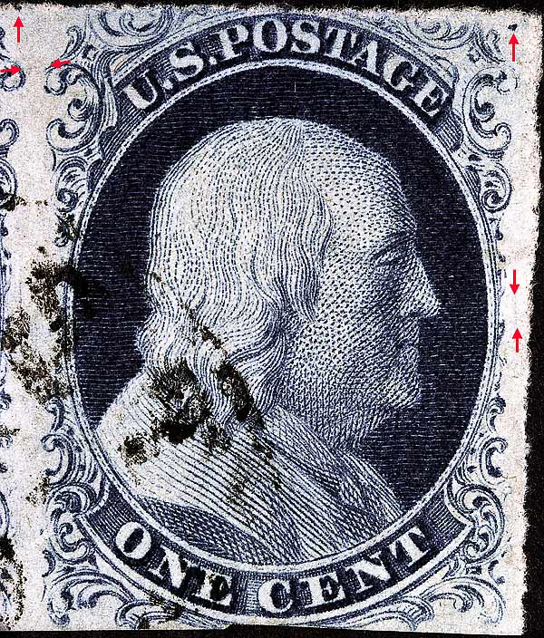
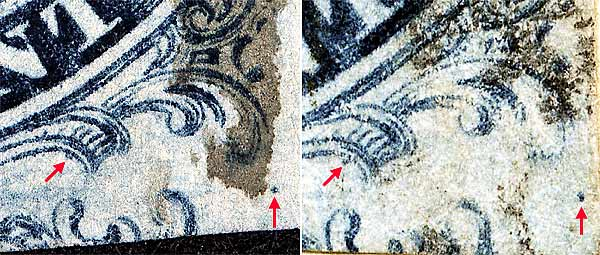

1¢ Franklin Issue of 1851-1857, PLATE 2 Pos 39R2, (Scott #7) |
| Scott #7 Blue, Type II, Relief A Issued both imperforate and perforated. Perforated copies are more scarce. |
|  |
| Figure 1. (BELOW) Detail view of a large dot plating mark as illustrated in the Ashbrook/Neinken plating diagrams. |
| Figure 2. (Below) Detail view of dot of color which is part of the stamp from POSITION 49R2. There is also a small dash of color under the right scroll ball remains not illustrated in the plating diagrams but is consistent. This marks appears elsewhere on the plate.  |
| Figure 3. (Below) Small vertical line of color in the right margin not illustrated in the plating diagrams. Similar marks appear elsewhere on the plate. |
| Figure 4. (Below) A faint horizontal line of color between Ornament L of 38R2 and Ornament A of 39R2. This is not illustrated in the plating diagrams. |
DISCLAIMER and COPYRIGHT INFORMATION: Thanks for visiting this site. I hope you learn something new as we are making new discoveries all the time. You, the visitor, have my permission to link to my pages and to share the INFORMATION with others. The images themselves fall under the fair use guidelines established by the United States Congress and Copyright law. Basically contact us before using. I also ask in return that you send me an e-mail if I have made a mistake, or have made some other technical blunder that in my rush to put these pages up would cause the visitor confusion. Please also visit my other website at www.slingshotvenus.com. and support the live music arts. While your there, be sure to purchase our music. There are not many philatelic rock stars around and we need all the help we can get. :-) I can be reached at: nerdman@ix.netcom.com Update 9/29/06 |